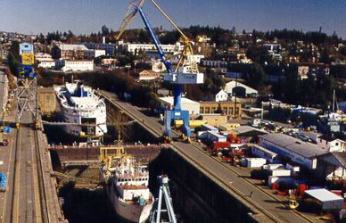

Esquimalt Graving Dock - Welcome
The Esquimalt Graving Dock, or EGD, is proud to be federally owned, operated,
and maintained. EGD is
the largest solid-bottom commercial drydock on the West Coast of the Americas.
We are located in an ice free harbour on Vancouver
Island near gateways to Alaska and the Pacific Rim.
Our world class facilities include stabilizer
pockets and high-speed heavy lift cranes up
to 150 tonnes/165 tons. The Dock can accommodate vessels up to 100,000
DWT or about 90% of the world's ships.
The EGD is available to any company or individual on a first-come first-serve basis. All
work is carried out by private sector ship repair
firms.
Who We Are
The EGD is a branch of Public Works and Government Services Canada (PWGSC)
- a Canadian federal government department.
Ship repair work takes place 24-hours-a-day, seven days a week, 365 days
a year. The Dock provides a full range of ship
repair services and amenities like our new stabilizer
pockets.
What We Do
The EGD is a popular
location for repair and refit work for:
- West Coast cruise ships;
- Bulk and general cargo vessels travelling to Alaska and the Pacific
Rim; and,
- Canadian vessels - especially the Department of National Defense and
the British Columbia Ferry Corporation.
Our ISO 14001
environmental management system ensures that work done at the Esquimalt Graving Dock
is done in an environmentally responsible manner.